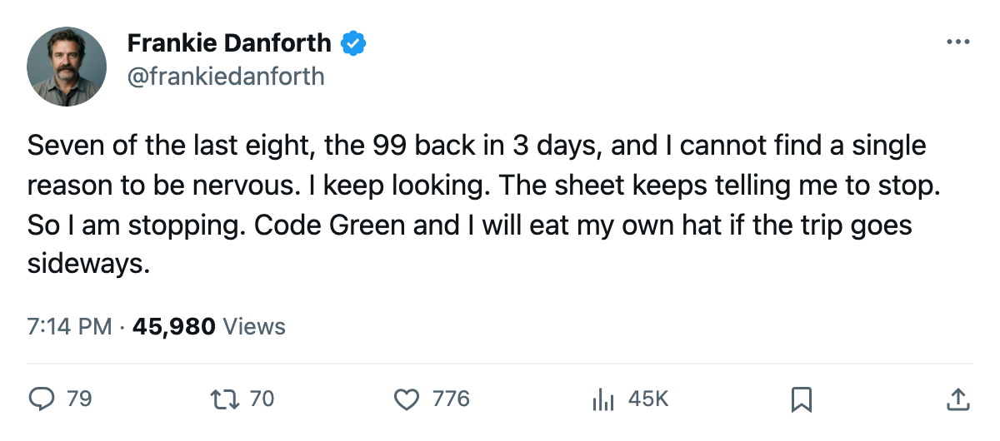
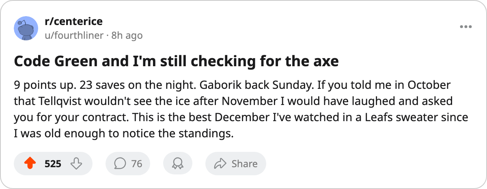

TOR
TORDANFORTH: Code Green, 17 points in 10, and the 99 is 3 days from a shift
The division lead sits at 9, the road trip through the Northwest starts Saturday, and nobody has told me yet why this stops.
 Frankie DanforthColumnist · Queen City Telegram
Frankie DanforthColumnist · Queen City Telegram
Code Green

 Roberto Luongo95 faced 23 shots Tuesday night against
Roberto Luongo95 faced 23 shots Tuesday night against  St. Louis Blues and stopped every one of them. Toronto won 7-0 on 30 shots the other way. Seventeen points in the last 10 games, and the lead on
St. Louis Blues and stopped every one of them. Toronto won 7-0 on 30 shots the other way. Seventeen points in the last 10 games, and the lead on  Boston Bruins has widened to 9 with 2 games in hand still sitting in Boston's favour. I have been waiting since October for someone to explain to me why this falls apart. Nobody has.
Boston Bruins has widened to 9 with 2 games in hand still sitting in Boston's favour. I have been waiting since October for someone to explain to me why this falls apart. Nobody has.
 Mats Sundin92 logged 26 points in 34 games at 23.3 minutes. Petr Chlup87 has 27 points in 34 at 20.7 minutes.
Mats Sundin92 logged 26 points in 34 games at 23.3 minutes. Petr Chlup87 has 27 points in 34 at 20.7 minutes.  Rick Nash85 has 21 in 34 at 15.3. The top of the lineup is not the problem. The top of the lineup has not been the problem since November, and the rest of the Northeast knows it.
Rick Nash85 has 21 in 34 at 15.3. The top of the lineup is not the problem. The top of the lineup has not been the problem since November, and the rest of the Northeast knows it.
 Marian Gaborik99 returns 2005-12-25, 3 days from now. The leg held him out from a window between 2005-11-16 and 2005-11-17. Eight points in 17 games, 22.6 minutes a night, $11.90M on a deal with 5 years left. The Bureau's Development Index has him at +11. That is the highest form term on the roster and it belongs to a man who has not played since mid-November.
Marian Gaborik99 returns 2005-12-25, 3 days from now. The leg held him out from a window between 2005-11-16 and 2005-11-17. Eight points in 17 games, 22.6 minutes a night, $11.90M on a deal with 5 years left. The Bureau's Development Index has him at +11. That is the highest form term on the roster and it belongs to a man who has not played since mid-November.
The trip begins Saturday at  Calgary Flames. Calgary is 14-13-2, 38 points, on a 2-game slide, 13-5 at home. Monday brings
Calgary Flames. Calgary is 14-13-2, 38 points, on a 2-game slide, 13-5 at home. Monday brings  Edmonton Oilers, Wednesday brings
Edmonton Oilers, Wednesday brings  Vancouver Canucks.
Vancouver Canucks.  Sami Salo79 wears a Calgary sweater now and lines up Saturday against the club that traded him on 2005-03-04. That is 5 days from now. He will get a standing ovation and then I hope Luongo makes him regret it.
Sami Salo79 wears a Calgary sweater now and lines up Saturday against the club that traded him on 2005-03-04. That is 5 days from now. He will get a standing ovation and then I hope Luongo makes him regret it.
What I want from the trip: confirmation. The home record reads 15-6, the road reads 11-2. That road record is the one that makes a lifer squint and double-check. If the trip ends 2-1 I am happy. If it ends 3-0 I start talking about points records and I cannot be trusted after that.
Mikael Tellqvist73 sits at -5 on the Index, the worst term on the roster. He has not been dressed in over a month. The 6-year, $1.20M deal is dead weight that the cap carries without complaining. The committee has picked Luongo and Maxime Ouellet86 and the door on the third man is closed.
Code Green. The last time I said Code Green I had 7 goals and 35 shots to lean on. This time I have a shutout, a 9-point lead, and 3 days until the best player on the roster steps back onto the ice. I am done looking for the axe.

